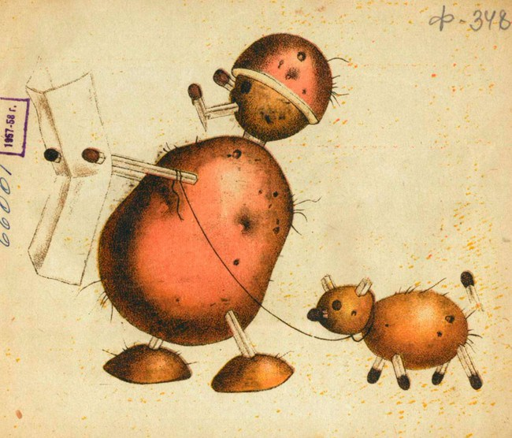

Potato News
Tired of politics? Give yourself a break and check out our up-to-the-minute content focused on your favorite spuds. With real-time news feeds integrated directly from Twitter and Google, you're sure to find quality content from sources you trust. And all in one convenient location!
Browse to your heart's content, and remember to check back often -- these news feeds update constantly.
The Twitterverse
Scroll through these fun and frivolous posts, and you just might find some cool ideas! #potatoesforlife
This is a temporary placeholder. A live Twitter feed widget that displays #potato content will occupy this place on the webpage, but this requires use of JavaScript, and will be included in future deliverables.
The Potato News Aggregator
The world is a busy place. Find global coverage and stay on top of the bustle by reading these just-released web articles, brought to you by Google and other sources*.
This is a temporary placeholder. A FeedInformer widget that displays aggregated news content will occupy this place on the webpage, but this requires use of JavaScript, and will be included in future deliverables.
* Above mentioned sources include Google News, ABC News, BBC News, TIME Magazine, and Yahoo! News.